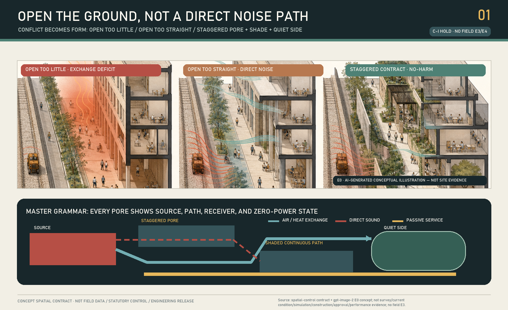
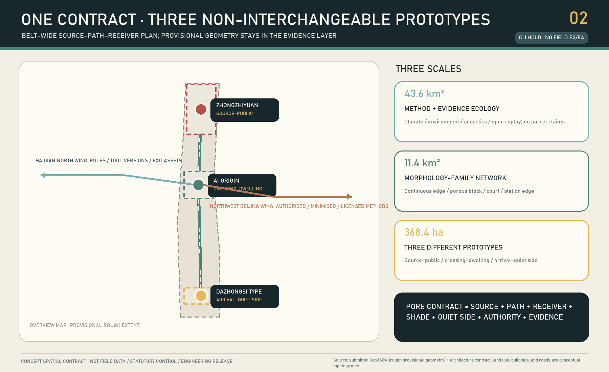
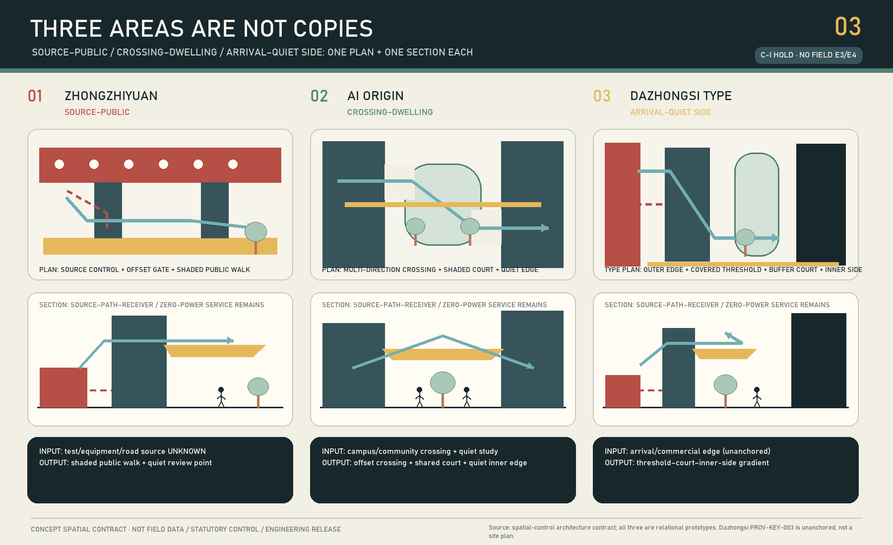
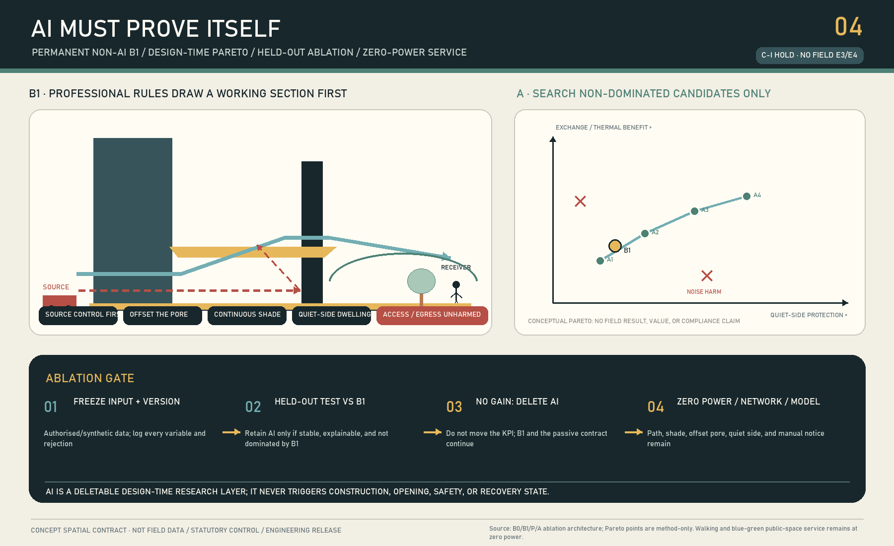
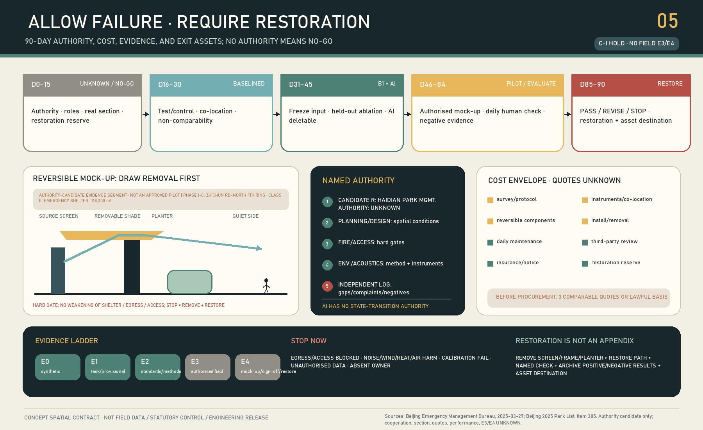

JINGZHANG BREATHES — THE POROUS GROUND CONTRACT
Open the ground, not a direct noise path: three former-rail-corridor section types establish a passive-first, AI-removable and restorable multi-physics porosity contract.
JINGZHANG BREATHES — THE POROUS GROUND CONTRACT
OPEN THE GROUND, NOT A DIRECT NOISE PATH. Draw the source, path and human receiver surface before deciding where to open, turn, shade and dwell. Sensors only verify; AI only compares design-time alternatives. With power, network and model off, the path, shade, staggered porosity and quiet side must still work.
Honest current status: C-S is a formal-v2 concept-spatial candidate; machine gates and independent blind review must read the exact packet records and cannot be replaced by this status sentence. C-I is HOLD. There is no real transect, written authority, E3 site baseline or E4 mock-up/restoration evidence. The package claims no validation, implementation, annual effect, health outcome, statutory compliance or government commitment. Repository geometry is provisional; PROV-KEY-003 is not reliably anchored to real Dazhongsi station-city conditions.
Five falsifiable clauses: (1) Opening too little can retain heat or limit exchange; an opening too straight creates a direct path that transmits noise to an occupied receiver. (2) B0 / B1 / P / A: B0 is read-only baseline, B1 is the manual rule baseline, P is the drawable parameter family, and A is design-time AI search; held-out ablation that is unstable or does not outperform B1 removes the AI. (3) PROV-KEY-003 is an unanchored rough provisional polygon, not a real Dazhongsi site. (4) E0 is concept, E1 provisional material, E2 public method, E3 authorised field baseline, and E4 reversible mock-up plus restoration evidence; current E3/E4 do not exist and C-I HOLD. (5) AI has no authority to approve openings, construction, state transitions, safety release, or restoration. With zero power or power failure, network failure and model removal, the path, shade, staggered porosity and quiet side remain in service.Metric Metric
Design Basis and Source List
The proposal answers the official three levels, three areas/two wings and agent.1—agent.6 through one non-portable spatial proposition. Along the former-rail innovation corridor, the northern R&D/test edge, central campus-neighbourhood passage and southern arrival interface each need opening without transmitting noise directly to people. If replacing Jing-Zhang and the three areas leaves the causal sequence unchanged, the design has failed.Source Source Source
The overall and key-area geometries are rough provisional carriers. SITE-001 is not an official redline; the rectangles are not parcels, roads or engineering boundaries; Dazhongsi supports a named type study only, not station-exit, quadrant, distance or capacity claims.Source Source Spatial data
Urban design, regulatory-plan boundaries and land classification are controlled by the local matrices. With no official controls, building survey, roads, title or utilities, the partition is a non-statutory research overlay and retain/renovate/demolish, FAR and height remain UNKNOWN.Standard Standard Standard
Air, climate and noise sources define professional method boundaries; they prove no local condition or effect. Acoustics uses source-path-receiver logic, while real wind, heat, air and sound variables require an authorised transect and qualified professionals.Source Source Source
Three-Level Scope Framework
| Level | Irreplaceable question | Delivery | Forbidden inference |
|---|---|---|---|
| 43.6 km² coordinated study | Which expertise, tools, regional context and wings support a reproducible method? | Source-path-receiver framework, versioned B1 rules, professional review and transfer gate | No parcel plan or official ventilation corridor |
| 11.4 km² overall design | How can the former-rail corridor open without direct transmission? | Causal learning spine, three sections, shaded path, quiet sides and evidence nodes | Not a real rail/road/access route |
| 368.4 ha key areas | How do three conflicts become non-interchangeable prototypes? | Source-public, passage-dwell and arrival-quiet-side types | No real condition from rough rectangles |
The levels are not scale copies. The coordinated level governs method and transfer eligibility; the overall level governs the contract network; each key area attempts to falsify it through a reviewable section.Depth Depth Spatial data

Coordinated Research Area: Industry and Future City Research
“Full-stack AI” is a design-production chain in which AI can be removed. B0 is a read-only authorised baseline. B1 is the manual rule solution by planning, architecture, landscape, environment, acoustics, fire and accessibility professionals. P converts opening position, offset, buffer depth, shade continuity, receiver surface and maintenance access into drawable parameters. A searches Pareto alternatives only on frozen inputs and held-out scenarios. If AI cannot stably and explainably find an alternative not dominated by B1, AI is deleted while the B1 public service remains.Source Source Source
The Zhongguancun Technology Service Wing exchanges versioned rules, tool manifests, professional methods and failure/replay assets. The Xiaoyue River Scenario Empowerment Wing exchanges only authorised, de-identified scenario methods and ordinary-maintenance lessons. Every transfer repeats B1, provenance, authority and no-harm review; geometry, thresholds and effects never transfer automatically.Source Depth
The identity is an offset bracket/turn, not a wind arrow, sensor or luminous green line. The international line—OPEN THE GROUND, NOT A DIRECT NOISE PATH.—turns AI governance into a visible promise of comparison, deletion and restoration.
Overall Design Area: Urban Renewal and Regulatory-Plan-Level Urban Design
The minimum spatial service atom is a continuous, zero-power-legible, accessible shaded passage between two authorised controls; a title/fire-checked air path; a quiet dwell surface not directly aimed at a source; and test/control, duty, stop and restore evidence. It is not a sensor pole or environmental score.Spatial data Spatial data Metric
Every opening passes six no-harm dimensions: air exchange, heat exposure, noise, accessibility, fire/evacuation and maintenance. Improvement in one cannot offset harm in another; averages cannot hide midday, heatwave, source-full-load, event-release or night envelopes. GB/T 37529 and QX/T 437 show that climate/ventilation claims require data and analysis; this proposal declares no official ventilation corridor.Standard Source
Five land polygons provide complete package topology only; six building footprints diagram source and receiver interfaces. Retain/renovate/demolish remains UNKNOWN. Canonical geometry triggers full regeneration of nine layers, metrics, figures, PDFs and HTML.Spatial data Spatial data Metric

Detailed Design of Key Areas
A Northern Zhongzhiyuan: source to public
Real equipment, activity, heat/emission sources and operating boundaries are unknown. The grammar is source-side control first, staggered porosity, continuous shaded public walk and a quiet review pocket, with test points separated from the public route. Zhongzhiyuan remains a non-interchangeable type prototype, not the priority real evidence segment. Phase I Section C is a separate authorisation lead and cannot retroactively anchor Zhongzhiyuan's temporary rectangle as a real site.Spatial data Spatial data
B Central AI Origin: passage to dwell
The ground stays permeable in multiple directions, but openings are offset; a shared shaded court turns the path; the learning edge sits on the quiet side; night and day do not depend on screens or access apps. A straight acoustic tube, re-sealing for quiet, or paywalled shade is failure. Title, schedule and campus/community authority remain UNKNOWN.Spatial data Spatial data
C Southern Dazhongsi type: arrival to quiet side
Only a type—outer arrival edge, covered threshold, turning buffer court and quiet inner side—is drawn. PROV-KEY-003 is unanchored, so PHASE-PGC-01 stays NO-GO until canonical geometry, transport/source evidence, title and management authority exist.Spatial data Metric
The three types are not copied nodes: the north controls source-public exposure, the middle holds passage and dwell together, and the south grades a strong arrival source into a quiet side. If all three collapse to trees, pavilions and sensors, the proposal stops.Depth

AI Innovation Ecosystem, Personas, and AI+ Scenarios
Six personas cover mobility-limited travellers/caregivers, outdoor/night workers, learners, R&D/test staff, transfer/international visitors, and maintenance/professional reviewers. They describe spatial failure burdens only; no person or health status is identified.Metric Source
| Scenario | Conflict | B1 / AI | Human gate and stop |
|---|---|---|---|
| 01 Unknown northern source | No inventory | B1=NO-GO; no AI | Named inventory; stop if separation fails |
| 02 Source exchange/public quiet (industry) | Too closed/too straight | B1 offset+shade; AI non-dominated alternatives only | Multi-professional no-harm |
| 03 Power/network outage | Digital layer zero | Full B1; delete AI | Zero-power walk |
| 04 Central passage peak | Movement pressure | Multi-direction B1; AI compares trade-offs | Authority+accessible accompanied walk |
| 05 Direct path to learning edge (industry) | Acoustic tube | B1 turn court; AI cannot certify | Paired acoustic method |
| 06 Child/caregiver walk | Visibility/shade/access | Human walk first | Stop on any barrier |
| 07 Southern arrival/wait | Arrival versus quiet side | Type B1 only | No siting before canonical geometry |
| 08 Unanchored Dazhongsi | Displaced polygon risk | Disable AI siting | Stop on exit/quadrant claim |
| 09 Sensor drift | Incomparable evidence | Suspend claims | Return UNKNOWN |
| 10 No AI gain (industry) | Held-out/perturbation failure | Delete AI, keep B1 | Never change KPI to save AI |
| 11 Complaint/adverse result | Multi-physics harm | Human closure/restoration | No offsetting harm with one benefit |
| 12 Day-90 exit | Pilot lock-in | Signed decision then restore | No extension without new authority |
The authoritative 12-card, six-persona and three-industry-test structure is in simulation.json.Metric Metric
Three pilgrimage nodes expose AI limits rather than celebrate an algorithm: Zhongzhiyuan’s Opening Ledger displays B1, AI alternatives, rejection and uncertainty; AI Origin’s Turn Court makes passage and quiet side physically legible; the Dazhongsi-type Restore Table records stopping, restoration and asset destination and remains unanchored.Spatial data Metric
Land Use, Building Scale, and Retain-Renovate-Demolish Strategy
The land-use map is a non-statutory programme-study partition; complete coverage serves topology and narrative only. Building features express source/receiver morphology, not current or planned buildings. FAR, height, density, current area, title and each retain/renovate/demolish decision remain UNKNOWN. The building-environment code is a deepening interface, not an outdoor compliance claim.Standard Metric
A future professional team must build the asset register from surveys, title/lease, fire, structure, MEP, heritage and operations. Each opening needs its own structural, enclosure, fire and source review; this diagram produces no construction quantity.Depth Depth
Transport, Rail, Municipal Infrastructure, and Public Services
ROAD-PGC-01 is a north-middle-south causal learning spine, not rail, road, station connection or accessible route. The three turning transects are drawable parameters, not proof of terrain, slope, right-of-way, fire or traffic safety. Transport, rail, parking, municipal, energy and digital infrastructure await professional data.Spatial data Depth Depth
Environmental instruments and local compute serve co-location, design comparison and evidence archiving only. They never open/close space, control building/equipment, issue health advice or statutory findings. Paper notices, ordinary maintenance, route, shade and quiet side survive power/network failure.

Blue-Green Network, Public Space, and Urban Character
The blue-green layer diagrams passive shade, ordinary planting maintenance and a quiet-side interface. It claims no canopy, cooling, pollutant reduction, stormwater or statutory green-space supply. Public space stays non-commercial, continuously accessible and phone-free.Spatial data Metric Metric
Culture turns the century-old engineering values of public dimensions, sections, checking and maintenance—not copied railway imagery—into AI culture: Centennial Section Open Class, Porosity Blind-Test Week, Negative Results Exhibition, Restore and Sign-off Day, and a bilingual Open Section Protocol. History requires curatorial review; events are proposals, not government arrangements.Standard Depth
Renewal Projects, Implementation Policy, and Phasing
Official public records make the authority path more concrete than guessing a point. Beijing’s emergency register identifies Jing-Zhang Railway Heritage Park Phase I Section C (Zhichun Road to the North Fourth Ring, 118,300 m²) as a Type III emergency shelter considering other hazards. The 2025 park directory lists the same address range and Haidian District Park Management Center as competent unit. The government portal records the 2023 Phase-I opening and under-bridge/limited rail-opening connectivity. The 2026 Haidian report says corridor regulatory planning passed technical review, while approval and implementation remain a next step; it also says main works in implementable Phase-II areas were completed. It is not the final approved plan.Source Source Source
Section C is therefore an evidence-segment candidate for requesting written authority and a real transect. It is not a canonical key-area site and not an approved pilot. The real transect is UNKNOWN, performance is UNKNOWN, and written authorization is UNKNOWN. The listed Park Management Center is a candidate contact, not consent, funding or a duty assignment. Any study must not weaken emergency shelter capacity, must not obstruct egress, must not obstruct accessibility, and must not impede fire access; qualified emergency/fire/access review outranks environmental optimisation. The current state remains UNKNOWN / NO-GO.Source Metric
| Days | State | Named delivery | Failure default |
|---|---|---|---|
| 0–15 | UNKNOWN/NO-GO | Authority, RACI, real transect, source inventory, fire/access/privacy, restoration budget | Concept only |
| 16–30 | BASELINED | Paired B0, co-location/calibration and signed data quality | Return UNKNOWN |
| 31–45 | B1_READY / AI_COMPARED | B1, frozen inputs, held-out ablation and rejection reasons | Delete AI or redraw |
| 46–70 | MOCKUP_AUTHORIZED / PILOT_OPEN | Authorised reversible mock-up and daily human opening check | Close and restore |
| 71–84 | EVALUATING | Matched remeasurement, missingness, complaints and negative results | No causal claim |
| 85–90 | PASS/REVISE/STOP → RESTORED | Named decision, removal/retention authority, asset destination and restoration | No pilot lock-in |
AI never triggers a transition. Stops include obstruction, component risk, noise/wind/other harm, failed calibration/comparability, unauthorised data, absent duty holder, maintenance failure, unresolved complaint or scope overrun.Spatial data Depth
Cost is not a fabricated total. It contains professional survey/protocol, instrument rental/co-location, reversible elements, installation/removal, daily maintenance, independent review, insurance/notice and restoration reserve. Comparable quotes or the applicable procurement basis follow an authorised scope before a monetary ceiling.Metric
Exit assets include B1 rules, model/dependency manifest or deletion record, rejected alternatives, a no-personal-data dictionary, negative-result/complaint ledger, component disposition and restoration receipt. Missing ordinary maintenance means closure; AI is not staff cover.Depth
Metrics, Area Recalculation, and Compliance Matrix
Known package facts are three taskbook names, 12 scenarios, six personas, three industry tests, three conceptual landmarks, a 90-day protocol, E3=0, E4=0 and the concept geometry’s own topology. Unknowns include real site, effect, AI net value, cost, FAR, current green/public space and the Dazhongsi anchor.Metric Metric Metric
EPSG:4548 areas only check internal consistency of the submitted provisional polygons. Sources, assumptions, nine GeoJSON layers, three matrices and self-check are authoritative; figures/HTML/generated illustration are explanatory.Metric Depth

Risk, Copyright, and Compliance
The primary risks are treating provisional geometry as site fact, averages as no-harm, AI advice as approval, 90 days as annual proof, a reversible pilot as permanent occupation, or maintenance labour as invisible. Each requires downgrade, stop or restoration.Depth Spatial data
The minimum data model has no name, phone, account, face, image, health, precise individual location, employer identity or continuous trajectory. Public feedback is object-level and time-aggregated. A forbidden field triggers stop, deletion and accountable handling.Source
Text, structured data and concept geometry are generated by zyaoii with OpenAI Codex. porous-ground-cutaway-concept-v1 used no input/reference image and is E0 only; caption it “AI-generated conceptual illustration / AI生成概念示意，不作为场地证据”. No geometry, dimension or effect comes from pixels.Source
All spatial proposals are open co-creation concepts, reference schemes or material for professional deepening. They do not replace statutory planning and are not government approval, implementation, funding, procurement, permission, safety or environmental findings.
References
- Official announcement, agent taskbook and processed navigation.Source Source Source
- Air, noise, legal responsibility and acoustic-method boundaries.Source Source Source
- Climate/ventilation and building-environment deepening.Source Source Source
- Open tools are method references only; no model/default/conclusion is transferred.Source Source Source